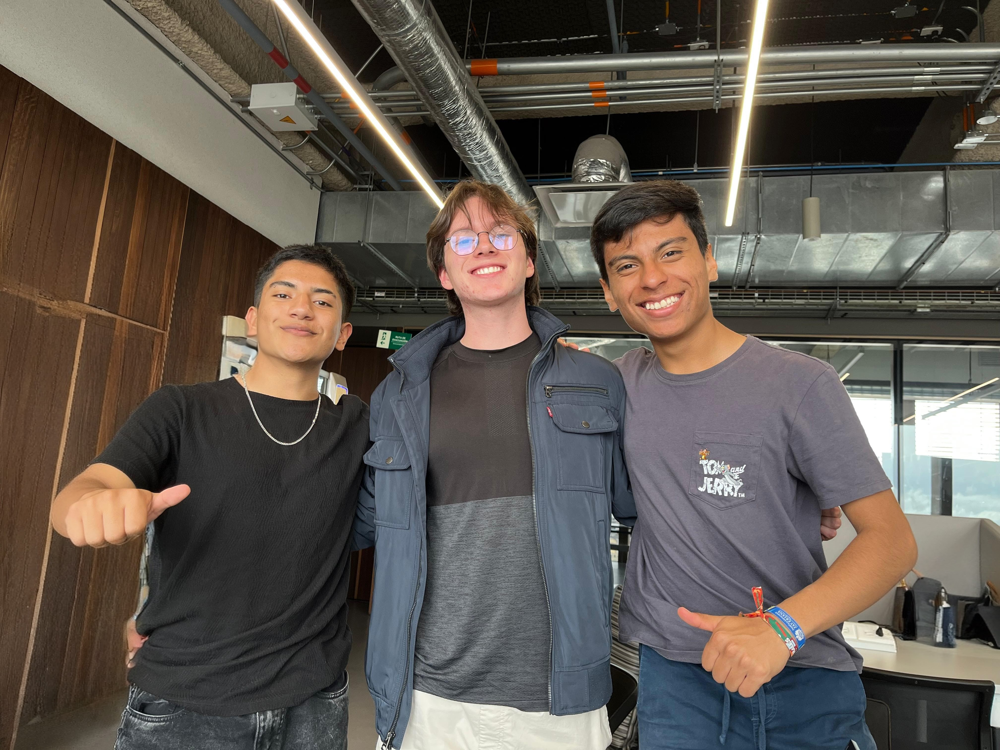

Nuestro Equipo
Quiénes Somos
Somos un equipo de tres estudiantes de Ciencia de Datos de la Universidad Javeriana de Colombia. Antes de iniciar este proyecto, no habíamos desarrollado aplicaciones web, pero siempre nos ha apasionado la inteligencia artificial, su funcionamiento y su impacto en la sociedad.
Consideramos que Hack4Edu es una excelente oportunidad para aprender y comprender el verdadero alcance que pueden tener las IA en la transformación social.
Cuando llegó la convocatoria de Hack4Edu, la vimos como una ocasión ideal para adquirir experiencia en el uso de APIs, computación en la nube y despliegue de aplicaciones web. Además, nos motivó la posibilidad de crear una herramienta que aporte al mejoramiento del sistema educativo.
Creemos firmemente que la educación debe ser objetiva y que, más allá de la calificación, lo realmente importante es fortalecer el proceso de aprendizaje.

Universidad Javeriana
Ciencia de Datos
Hack4Edu 2025
Hackathon Educativo
3 Integrantes
Equipo Multidisciplinario